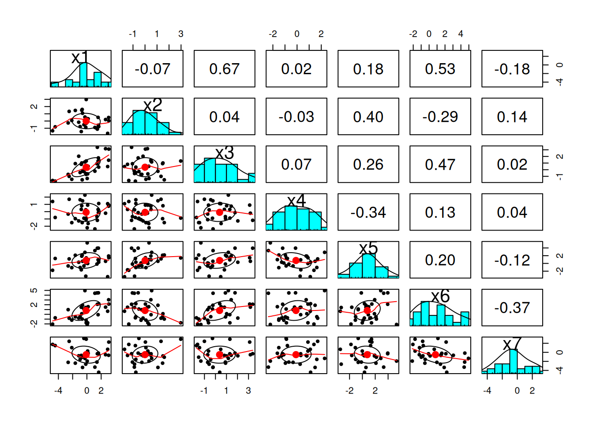
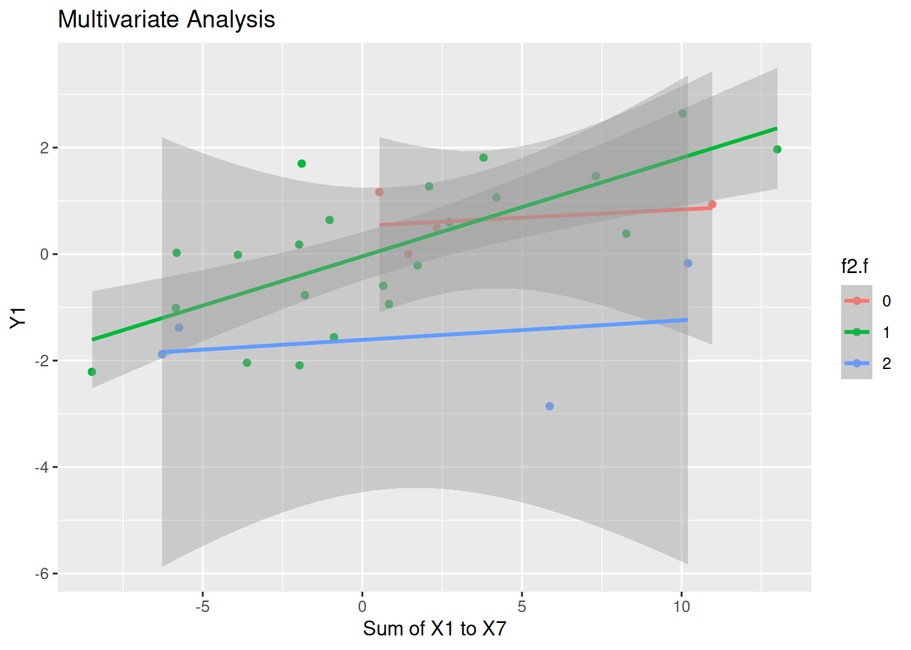

#summary(xCA)# create a new variable for the sum of x1 to x7dat$sumX <-rowSums(dat[,5:11])# show bivariate plots of x1 to x7pairs.panels(dat[,5:11])

# make all the f variables factorsdat$f1.f <-as.factor(dat$f1)dat$f2.f <-as.factor(dat$f2)dat$f3.f <-as.factor(dat$f3)dat$f4.f <-as.factor(dat$f4)dat$f5.f <-as.factor(dat$f5)dat$f6.f <-as.factor(dat$f6)dat$f7.f <-as.factor(dat$f7)dat$f8.f <-as.factor(dat$f8)
Data Analysis
Bivariate Analysis
# Bivariate modelmod <-lm(y1 ~ sumX, data = dat)summary(mod)
Call:
lm(formula = y1 ~ sumX, data = dat)
Residuals:
Min 1Q Median 3Q Max
-3.4671 -0.7240 0.0244 0.7403 2.1877
Coefficients:
Estimate Std. Error t value Pr(>|t|)
(Intercept) -0.21966 0.22182 -0.990 0.33051
sumX 0.14134 0.03916 3.609 0.00119 **
---
Signif. codes: 0 '***' 0.001 '**' 0.01 '*' 0.05 '.' 0.1 ' ' 1
Residual standard error: 1.186 on 28 degrees of freedom
Multiple R-squared: 0.3175, Adjusted R-squared: 0.2931
F-statistic: 13.03 on 1 and 28 DF, p-value: 0.001186
# plot the dataggplot(dat, aes(x = sumX, y = y1)) +geom_point() +geom_smooth(method ="lm") +labs(title ="Bivariate Analysis", x ="Sum of X1 to X7", y ="Y1")
mod3 <-lm(y1 ~ sumX + f2, data = dat)summary(mod3)
Call:
lm(formula = y1 ~ sumX + f2, data = dat)
Residuals:
Min 1Q Median 3Q Max
-2.48504 -0.76452 0.00886 0.71636 2.15224
Coefficients:
Estimate Std. Error t value Pr(>|t|)
(Intercept) 0.72363 0.44770 1.616 0.11765
sumX 0.12998 0.03659 3.552 0.00143 **
f2 -0.92937 0.39188 -2.372 0.02510 *
---
Signif. codes: 0 '***' 0.001 '**' 0.01 '*' 0.05 '.' 0.1 ' ' 1
Residual standard error: 1.099 on 27 degrees of freedom
Multiple R-squared: 0.4352, Adjusted R-squared: 0.3933
F-statistic: 10.4 on 2 and 27 DF, p-value: 0.0004478
kable(vif(mod3), col.names =c("Variable", "VIF"))
Variable
VIF
sumX
1.017427
f2
1.017427
# plot the results ofggplot(dat, aes(x = sumX, y = y1, color = f2.f)) +geom_point() +geom_smooth(method ="lm") +labs(title ="Multivariate Analysis", x ="Sum of X1 to X7", y ="Y1")

Fitting our Model (Better)
# first, we need to adjust our y and x variables so that they are both positivedat$y1 <- dat$y1 +abs(min(dat$y1)) +1dat$sumX <- dat$sumX +abs(min(dat$sumX)) +1# perform a box-cox transformation on the bivariate model of y1 and sumXbc.out <-boxcox(mod, lambda =seq(-2, 2, by =0.1))
# fit the model with the box-cox transformationmod.bc <-lm(y1^lambda ~ sumX, data = dat)summary(mod.bc)
Call:
lm(formula = y1^lambda ~ sumX, data = dat)
Residuals:
Min 1Q Median 3Q Max
-5.4129 -1.1183 -0.0335 1.1591 3.7191
Coefficients:
Estimate Std. Error t value Pr(>|t|)
(Intercept) 2.75074 0.77280 3.559 0.001350 **
sumX 0.23879 0.06418 3.720 0.000885 ***
---
Signif. codes: 0 '***' 0.001 '**' 0.01 '*' 0.05 '.' 0.1 ' ' 1
Residual standard error: 1.944 on 28 degrees of freedom
Multiple R-squared: 0.3308, Adjusted R-squared: 0.3069
F-statistic: 13.84 on 1 and 28 DF, p-value: 0.0008847
# plot the results of the box-cox transformationggplot(dat, aes(x = sumX, y = y1^lambda)) +geom_point() +geom_smooth(method ="lm") +labs(title ="Bivariate Analysis with Box-Cox Transformation", x ="Sum of X1 to X7", y ="Y1^lambda")